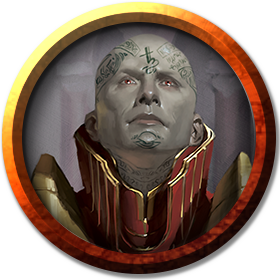

Ulrun Anyuthvar
medium male NG undead (human) Wizard (Necromancer 18)
Armor Class 17 (natural armor)
Hit Points 135 (18d8 + 54)
Speed 30 ft.
| STR | DEX | CON | INT | WIS | CHA |
|---|---|---|---|---|---|
| 11 (+0) | 16 (+3) | 16 (+3) | 20 (+5) | 14 (+2) | 16 (+3) |
Saving Throws CON +10, INT +12, WIS +9
Skills Arcana +19, History +12, Insight +9, Perception +9
Damage Resistances Cold, Lightning, Necrotic
Damage Immunities Poison; Bludgeoning, Piercing, and Slashing from Nonmagical Attacks
Condition Immunities Charmed, Exhaustion, Frightened, Paralyzed, Poisoned
Senses Truesight 120 ft., Passive Perception 19
Languages Common plus up to five other languages
Challenge 21 (33,000 XP)
Proficiency Bonus +7
Grim Harvest Ulrun can reap life energy from creatures he kills with his spells. Once per turn when he kills one or more creatures with a spell of 1st level or higher, he regains hit points equal to twice the spell's level, or three times its level if the spell belongs to the School of Necromancy. He doesn't gain this benefit for killing constructs or undead.
Undead Thralls When Ulrun casts animate dead, he can target one additional corpse or pile of bones, creating another zombie or skeleton, as appropriate. Whenever he creates an undead using a necromancy spell, it has additional benefits:
-
The creature's hit point maximum is increased by 18.
-
The creature adds +7 to its weapon damage rolls.
Legendary Resistance (3/Day). If the lich fails a saving throw, it can choose to succeed instead.
Rejuvenation. If it has a phylactery, a destroyed lich gains a new body in 1d10 days, regaining all its hit points and becoming active again. The new body appears within 5 feet of the phylactery.
Spellcasting. The lich is an 18th-level spellcaster. Its spellcasting ability is Intelligence (spell save DC 20, +12 to hit with spell attacks). The lich has the following wizard spells prepared:
- Cantrips (at will): mage hand, prestidigitation, ray of frost
- 1st level (4 slots): detect magic, magic missile, shield, thunderwave
- 2nd level (3 slots): acid arrow, detect thoughts, invisibility, mirror image
- 3rd level (3 slots): animate dead, counterspell, dispel magic, fireball
- 4th level (3 slots): blight, dimension door
- 5th level (3 slots): cloudkill, scrying
- 6th level (1 slot): disintegrate, globe of invulnerability
- 7th level (1 slot): finger of death, plane shift
- 8th level (1 slot): dominate monster, power word stun
- 9th level (1 slot): power word kill
Turn Resistance. The lich has advantage on saving throws against any effect that turns undead.
Actions
Paralyzing Touch. Melee Spell Attack: +12 to hit, reach 5 ft., one creature. Hit: 10 (3d6) cold damage. The target must succeed on a DC 18 Constitution saving throw or be paralyzed for 1 minute. The target can repeat the saving throw at the end of each of its turns, ending the effect on itself on a success.
Legendary Actions
The lich can take 3 legendary actions, choosing from the options below. Only one legendary action option can be used at a time and only at the end of another creature’s turn. The lich regains spent legendary actions at the start of its turn.
Cantrip. The lich casts a cantrip.
Paralyzing Touch (Costs 2 Actions). The lich uses its Paralyzing Touch.
Frightening Gaze (Costs 2 Actions). The lich fixes its gaze on one creature it can see within 10 feet of it. The target must succeed on a DC 18 Wisdom saving throw against this magic or become frightened for 1 minute. The frightened target can repeat the saving throw at the end of each of its turns, ending the effect on itself on a success. If a target’s saving throw is successful or the effect ends for it, the target is immune to the lich’s gaze for the next 24 hours.
Disrupt Life (Costs 3 Actions). Each non-undead creature within 20 feet of the lich must make a DC 18 Constitution saving throw against this magic, taking 21 (6d6) necrotic damage on a failed save, or half as much damage on a successful one.
A Lich’s Lair
A lich often haunts the abode it favored in life, such as a lonely tower, a haunted ruin, or an academy of black magic. Alternatively, some liches construct secret tombs filled with powerful guardians and traps.
Everything about a lich’s lair reflects its keen mind and wicked cunning, including the magic and mundane traps that secure it. Undead, constructs, and bound demons lurk in shadowy recesses, emerging to destroy those who dare to disturb the lich’s work.
A lich encountered in its lair has a challenge rating of 22 (41,000 XP).
Lair Actions
On initiative count 20 (losing initiative ties), the lich can take a lair action to cause one of the following magical effects; the lich can’t use the same effect two rounds in a row:
- The lich rolls a d8 and regains a spell slot of that level or lower. If it has no spent spell slots of that level or lower, nothing happens.
- The lich targets one creature it can see within 30 feet of it. A crackling cord of negative energy tethers the lich to the target. Whenever the lich takes damage, the target must make a DC 18 Constitution saving throw. On a failed save, the lich takes half the damage (rounded down), and the target takes the remaining damage. This tether lasts until initiative count 20 on the next round or until the lich or the target is no longer in the lich’s lair.
- The lich calls forth the spirits of creatures that died in its lair. These apparitions materialize and attack one creature that the lich can see within 60 feet of it. The target must succeed on a DC 18 Constitution saving throw, taking 52 (15d6) necrotic damage on a failed save, or half as much damage on a success. The apparitions then disappear.
History

Nine-and-a-half centuries ago, Ulrun was a powerful necromancer, a member of the Night's Blessing school. Dedicated to the study of necromancy and its application to the restoration of life, he was captured by the powerful ancestral lich Kali Kaal, who was angered at his attempts to thwart death and undeath. Kali killed Ulrun and brought him back to unlife as a lich, but kept Ulrun's phylactery ever since, a form of curse dooming him to unlife--without the phylactery, Ulrun cannot end his own lichdom. Faced with the horrors of an infinite existence, Ulrun despaired for a few decades, then chose to embrace his lichdom and embrace his unique situation to fight against Kali and the greater horrors of undeath.
He found an abandoned military garrison on the southern shores of Yithi, situated on Covenent Hill (near Ghaulangiasti, and made it his home. Over the next nine centuries of his unlife, he took on a number of apprentices, acting as an "advanced course" for the Night's Blessing school. He has also steadily worked to understand Kali and its aims, periodically aiding those who battle against the Red Rose by providing information, monetary resources, or arcane aid.